Select a component from the circuit to explore. Note the waveform in the top left as you move around the website.
R₁ · 10kΩ — About
What is this place?
I'm an engineer who works on advanced imaging systems. This is my website portfolio, which highlights some of my projects and hobbies, music, and even a store!
This portfolio is built as an interactive schematic. Every section is a component of an amplifier circuit. Every navigation is signal flow.
U₁ · LM741 Op-Amp — Music
Signals & frequencies.
Like the electrons flowing through a circuit, or the light landing upon our atmosphere, music comes in waves of energy. If you're in space you'll need to hold the speaker against your head to hear these songs. I hope you enjoy!
VIZ-1Wireframe Reactor3D Audio Visualizer
ICOidle
Shape
Response
flow
morph
zoom
speed
Controls
spin
rings
U₂ · ECE Labsno source-- fps00:00
Singles
00
haze to come [DEMO]
Produced · 2026 · R&B / Electronic
—:——0:00
01
the voice of beauty [DEMO]
Produced · 2026 · R&B / Electronic
—:——0:00
02
firepit
Produced · 2018 · Acoustic / Lo-fi
—:——0:00
07
Cinder Lens
Produced · 2026 · R&B / Electronic
—:——0:00
AI Generations
Starlight
Generated · 2026 · R&B / Gospel
—:——0:00
01
F**k Being Polite
Generated · 2026 · Drum & Bass / Chill-Downtempo
—:——0:00
02
It's Alright
Generated · 2026 · Experimental / Blues & Tech-House
—:——0:00
02
Ghosts
Generated · 2026 · Alternative Rock / Pop
—:——0:00
U₁ · LM741 Op-Amp — Projects
Prompt Engineering · In Progress
This Website
Created on a whim with claude, I've had a lot of fun putting this together.
Prompt Engineering · In Progress
This Website
Created the first iteration in an evening after work. Claude code is doing all of the heavy lifting as I dont know any HTML, CSS, or JavaScript.
Status
In progress
Start Date
April 2026
Discipline
Prompt Engineering
Completion Date
--
Background
Thought it might be fun to make a website to highlight my projects, music, and interests. I had an idea and used claude to sketch up a quick prototype. After that, I got a little hyperfocused and ran with it.
The site is built with HTML, CSS, and JavaScript, with the help of Claude's code generation capabilities. It's meant to resemble an electrical schematic, but with live interactions and animations.
Notes & links
https://github.com/ianece/agnesbay
Edge Computing · Complete
Arduino Dry Cabinet
A simple Arduino-based dry cabinet for storing and organizing electronic components.
Edge Computing · Complete
Arduino Dry Cabinet
A simple Arduino-based dry cabinet for storing and organizing electronic components.
Status
Complete
Start Date
January 2024
Discipline
Edge Computing
Completion Date
January 2024
Fig. 01 — Turnstile on the roof, clear sky bias
The antenna
Quarter-wavelength crossed dipoles with a phasing harness for right-hand circular polarization. Built from copper pipe and PVC on a tripod mount — rigid enough to survive a Nor'easter, cheap enough that if it snaps I don't care.
Phasing harness is a quarter-wave 75 Ω coax stub between the two dipoles. It's the whole trick. Without it, you're just rotating through the polarization and losing 3 dB every few seconds.
Fig. 02 — Decoded pass, morning
Image · insert later
Fig. 03 — GQRX capture waterfall
The receive chain
RTL-SDR v3 feeds GQRX at 48 kHz IQ. I pipe the audio out through a virtual cable into WXtoImg (yes, the old one — the new fork works too but I'm comfortable here). Decoded line rate is 2 per second, full pass is about 12 minutes.
End-to-end workflow: TLE tracking schedule, passive record during pass, demodulate and decode, final upscale and colormap. Pulled a full-disc IR image of Florida under Hurricane Helene landfall in 2024.
Pass recording · YouTube embed to come
Notes & links
If you want to start one of these yourself, the two things I'd flag: get a low-noise amp at the antenna (an LNA4ALL runs about $40 and doubles the usable passes), and mount the antenna higher than the roofline if at all possible — every degree of elevation the bird gets above your horizon is worth more than any software tweak.
Working on adding a Raspberry Pi so the whole chain can run headless and auto-upload to a gallery. Probably next winter when the roof is less hostile.
Happy to link pass captures and decoded images on request — got a few hundred on disk at this point.
Computer Vision · Completed
3D Reconstruction of Small Objects
Final project for Robotics & Comp. Vision course.
Computer Vision · Completed
3d Reconstruction of small objects using NeRFS, Gaussian Splatting & Photogrammetry
We decided to explore different techniques and methods for the data collection and 3d reconstruction of small objects. This project card is structured to showcase our approach and results, and is a 1 for 1 copy of our final paper. Link foudn below.
Status
Completed
Start Date
November 2024
Discipline
Computer Vision
Completion Date
December 2024
Ian Christensen, Damian Czernikowski, Arjun Shanmugadas — Department of Electrical and Computer Engineering, Robotics & Computer Vision (14:332:472:01), Rutgers University
Abstract
Abstract — This paper compares three popular techniques for 3D reconstruction from video used in our project: Neural Radiance Fields (NeRFs), photogrammetry, and Gaussian splatting. In the project we explore their differences in reconstructing smaller objects. We also focus on proper data collection methods for good reconstruction accuracy. Through experimentation with various datasets, including objects like bananas and mini-figures, we examine the strengths and limitations of each method. Key findings highlight the importance of camera motion, lighting conditions, and dataset selection in achieving high-quality reconstructions.
Index Terms — NeRFs, Photogrammetry, Gaussian Splatting, 3D Reconstruction, Computer Vision
I. Introduction and Background
"Disclaimer: A 15-minute video was produced for this project, the data collected will be better represented in the video than in the figures in this paper."
In our project we were given 5 options to choose to explore, or any combination of the options, options were as follows:
RL (Reinforcement Learning)
NeRF with colmap
Other 3D Reconstruction
Transfer Learning (to fine-tune on existing DL models)
Foundation Model (to use & evaluate)
For our project we chose to go with a 3D reconstruction using NeRF with colmap, and other methods, because we thought it would be fun. For the work we ended up doing, we should have begun much sooner. Our professor did warn us however. We also shot ourselves in the foot a bit and wasted a couple of days by being a bit too over-eager in our initial plan, and perhaps not realizing that soon enough. Regardless, we all thoroughly enjoyed this project and the things we learned along the way.
Initially we set the scope of the project with the thought we would be able to fully 3D reconstruct the exterior and interior of the EE building on Busch campus. We learned over the course of about 2-4 days that this was not going to be possible. As such, we set our sights on creating a 3D reconstruction of smaller objects, and comparing different reconstruction methods on our image datasets. Later in discussion, we will touch on how we could potentially achieve our initial plan. It is also important to note that all 3D reconstructions done in this project were done on our personal machines using our personal hardware (i.e. GPU's, CPU's, ect. )
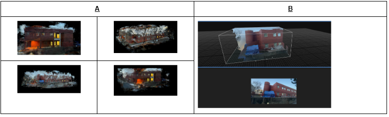
Fig. 1 — Initial reconstructions from video with mediocre image quality and improper data collection methods. A: NeRF reconstruction from the corresponding imageset. B: Photogrammetry reconstruction from corresponding imageset, note: lower half is reference real/raw image
II. Initial Research & Methodology
When we began collecting preliminary data for the EE building we didn't spend long enough researching proper data collection methods. We took a few images of the building and went back to process them only to be met with errors. After further research we realized that to be able to fully assess even just the exterior of the EE building, we would most likely need a drone, and permission from the university & potentially Rutgers police as well. Partially due to the landscape surrounding the EE building in particular, but also due to other reasons revealed in the following section. Realizing we would be unable to reconstruct the EE building as we had intially hoped, we set our sights on reconstructing smaller objects instead. This yeilded us much better results.
III. Data Collection
A. Initial Mistakes & Learnings
We initially thought a handful of pictures from different angles of the ECE building would be enough to do a rough 3D reconstruction and go from there. Unfortunately, we were not even able to run this dataset through colmap. We learned that the best way for us to go about this would be to record a video and use ffmpeg to parse the video into frames. It is important to consider ffmpeg does not have any consideration in the frames it chooses, and some may be less than ideal. It is recommended to view the imageset and remove blurry frames before processing with colmap. We did this with "FastStone Image Viewer". We aimed for around 100-300 frames for any given object. More frames typically result in higher quality reconstructions, but not always. We also learned that there are effective and ineffective ways to capture images, particulary regarding camera angles and movement around the object during filming. Initially we made a lot of angular panning movements for some of our first reconstructions and learned that these types of motions can be harmful to the quality of the end result. The most effective way to capture an object is to image the same features from multiple angles, but with a relatively similar distance from the object. In the figure below (fig. 2) we show some good and bad camera motions for capturing an object for 3D reconstruction.
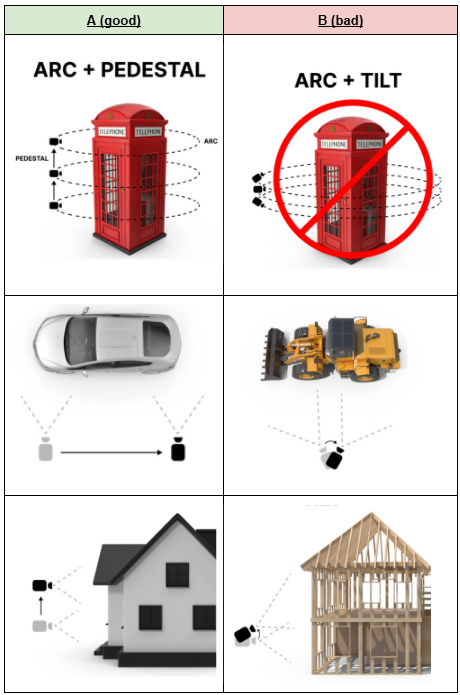
Fig. 2 — Good and bad camera motions for capturing an object in 3D reconstruction. A: Good motions include panning around the object horizontally without angling the camera vertically & panning across the object. B: Bad camera movements include pivoting the camera in one place.
Lighting is also a relatively important factor, as it accounts for the features found in the images. Strong background light with minimal shadows seemed to provide the best results. It is also a reason why we found you must rotate the camera around the object, rather than rotate the object and leave the camera stationary. The way the light falls upon the object and therefore reflects back defines its feature. If the object is rotated, the light falling upon the object is constantly changing, and as a result, colmap may struggle to create feature correspondences, or even be unable to match keypoints. We tested this, and although colmap was able to execute and produce a transforms.json file, the rendered reconstruction was hardly recognizable (using a number of high quality images).
B. Our Methodology
To reconstruct a good model, we imagined a sphere around our object, with our object in the center. Because the object was sitting on a platform or surface such as the ground, we can typically neglect the bottom half of the sphere that our object is "inside", leaving us with a hemisphere (fig. 3).
To achieve a good reconstruction, we want to move our camera around the surface of this hemisphere, while keeping the camera pointed at our object, or the center of the hemisphere. We found that two rotations around the object, in a spiral motion starting from near the top, but not quite directly above, and moving down to near the bottom gave good results. We found it relatively difficult to achieve this with objects on the ground, or even on a table/counter-top. In the end, we found the easiest way to image smaller objects was to pedestal them up to about chest height, leaving plenty of room to physically rotate around the object. This can be achieved in many ways. Two convenient ways used in this project were a speaker stand, and a short plant stand stacked on other objects.
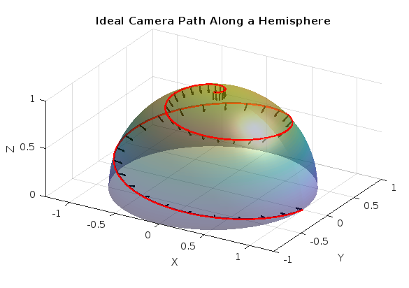
Fig. 3 — Our methodology for capturing good datasets for 3D reconstruction of an object using video. By rotating around the object and spiraling down while maintaining distance and consistent focal point, we found our results to be very good. (More applicable to smaller objects.)
C. Chosen Datasets
We chose to image many objects over the course of this project. However, we learned that there are certain objects that typically yield better results. Objects with minimal or no reflective material/surfaces tend to be desirable for quality reconstruction results. As well, objects lacking any translucent surfaces are typically a wise choice. As such, as the project progressed, our choice of objects adapted as well. In this paper we chose to represent 4 of our best datasets (fig. 4) for comparison between different 3D reconstruction methods:
Bananas: The bananas used were a bunch of 3, quite ripe bananas, with a number of brown patches and surface features. They were placed on a speaker stand.
Silent Minifigure: A minifigure of a character named Silent from the video game "Slay the Spire" made from Youtooz. Placed on hardwood floor.
Peace Pillow & Pinecone: A very small "throw" pillow with the word Peace written on it, as well as a pinecone laid overtop. Placed on a speaker stand.
Cannabis Flower: The flower from a cannabis plant. Many concave and convex surface features, with very fine detail, as well as colorful leaves. Placed on a small plant stand on top of a printed checkerboard pattern.
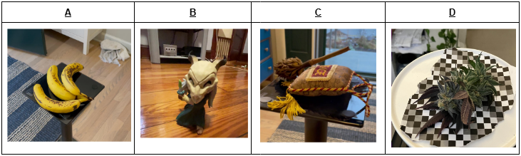
Fig. 4 — Raw/Real images of the objects from chosen datasets. A: A bunch of bananas. B: Silent, a video-game character. C: A pillow and a pinecone. D: The flower from a cannabis plant, including leaves
Below in (fig. 5) is our camera positions for each image in each dataset. This was calculated with some simple lines of python using the "transforms.json" file output from colmap, which we will discuss shortly. You can somewhat see the "spiral" motion we aimed for when capturing video of each object.
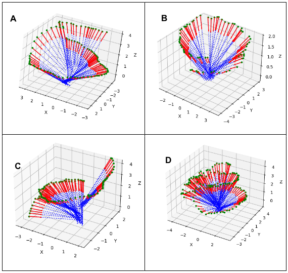
Fig. 5 — Camera positions for each image in the corresponding dataset. A: Bananas. B: Silent. C: Peace. D: Flower. Green dots are camera position, red vectors are camera orientation, and dashed blue line is a continuation of the cameras view angle.
IV. NeRF Reconstructions
A. Background
Neural Radiance Fields (NeRF) is a deep learning model that reconstructs 3D spaces from a set of 2D images. It does this by mapping 3D coordinates (x,y,z) and the camera's view direction to output the color (r,g,b) and the volume density of each point in the 3D space. The volume density determines how solid or opaque a point appears. NeRF learns this representation using a neural network, typically a multi-layer perceptron (MLP). To create the final 3D rendering, NeRF employs volume rendering. This technique shoots rays through the scene, sampling multiple points along each ray. The model predicts the color and density for each sampled point, and these predictions are combined to calculate the final rendered color of the ray, resulting in a realistic 3D representation.
colmap: is an open source software that is critical step in 3D reconstruction for NeRF's as well as other applications. It detects distinct features in the images given to it, and matches them across the different images. It also estimates the camera poses and generates a point cloud. To achieve this, colmap goes through a number of steps, which can be quite time consuming on some machines as we learned in this project.
Feature Detection & Camera Calibration: Utilizing feature detectors like SIFT (scale-invarient feature transform), colmap identifies distinct repeatable keypoints in each image that can later be matched between images. Following steps rely on this steps execution. This step also calculates the intrinsic camera parameters such as focal length.
Feature Matching: Colmap then finds correspondences between the features detected by SIFT in pairs of images and matches them. In our case, matching was sometimes exhaustive, meaning every image was compared to one another, which can be quite time consuming. Data preparation can be a useful tool to work around this.
Initialization: Colmap selects an initial pair based on those with the highest number of matched features. It then starts estimating the relative camera pose (rotation & translation) between the two images using the matched features and typically an algorithim like RANSAC.
Incremental Reconstruction: Colmap continues along the previous step, iterating through all the images. For each new image, colmap again estimates the pose relative to the existing "3D Structure". New 3D points are triangulated and added to the sparse point cloud.
Sparse point cloud is the set of 3D points in a dataset which are relatively far apart from each other. For an ideal reconstruction, these points should be closer together to form a "dense point cloud". The denser the points are, the more accurate of a reconstruction will be produced.
Bundle Adjustment: Lastly, colmap optimizes all the camera parameters & 3D points via bundle adjustment to minimize error. This is done with a non-linear least squares optimization over the entire dataset.
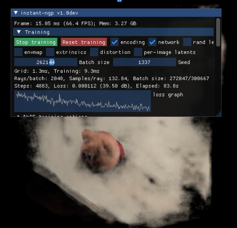
Fig. 6 — Our first successful reconstruction using NeRFs, image is noisy and object is not distinct. This led us to further explore proper data collection methods. Object is a small Kirby figurine from the Kirby video-game series, imaged on a white counter-top.
Above in (fig. 6) we show our first successful reconstruction of an object using NeRFs, this was done immediately after failing to run our preliminary pictures of the EE building through colmap. This was honestly a very exciting moment for us all, but it also highlighted that we still had much to learn about proper data collection, as the image is noisy and the object is not very distinct. Once we learned proper techniques & camera movements however, we were able to produce much better results.
B. Results
After figuring out how to properly collect data for NeRF reconstructions as well as others, we were very pleased with the results (fig. 7) we received. All datasets represented in this paper looked very good utilizing INGP to reconstruct. For training, we aimed for around 10k steps as we noticed the loss function typically plateauing around 6-8k steps.
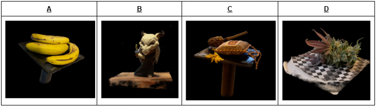
Fig. 7 — 3D Reconstruction of chosen objects utilizing NeRFs, powered with NVidia's INGP. Video will show better detail. A: Bananas B: Silent C: Peace D: Flower
Looking at images A through D in (fig. 7), NeRF was able to successfully recreate the objects with extreme detail. Being able to fully wrap around the object improves from what was previously seen in (fig. 1 & fig. 4). Before, there were a lot of gaps and uncertainties since NeRF did not have the entire object to map. However, by using the proper data collecting techniques, colmap had a much easier time identifying the feature vectors in each frame and NeRF was able to train on a more detailed dataset.
V. Structure from Motion (Photogrammetry) Reconstructions
A. Background
Photogrammetry, or structure from motion, is another method that can utilize the same datasets we have been producing to also create 3D reconstructions. It differs from NeRFs with respect to how it computes and represents the scene or object. Photogrammetry typically requires less computational power to execute than NeRFs. Unlike NeRFs, which creates a volumetric rendering of the scene, photogrammetry creates a point cloud, which can be converted into a mesh/model and textured utilizing the base images.
To do 3D reconstructions of our datasets utilizing structure from motion we made use of an application produced by EpicGames titled "RealityCapture". The application made the process quite simple and streamlined it for us. All we really had to do was drag and drop our image-set created with ffmpeg, the same image-set used with colmap for NeRfs, into the program, and then step through the simple functions.
B. Results
Our results (fig. 8) from photogrammetry came out pretty well, some better than others. We noticed that smoother objects tended to be better represented with this reconstruction method. Also interesting to note is photogrammetry seemed to struggle with reflective surfaces much more than NeRFs. In the example with the bananas, NeRFs did an excellent job capturing the reflections off the glass surface they were sat on, while photogrammetry struggled with these areas and left holes in the model in their place (fig. 6: A, C)
Our favorite result from our datasets utilizing photogrammetry was the Silent minifigure. It had the cleanest surface of all the reconstructions and the least errors. The bananas also reconstructed quite well. Either could be exported and printed as 3D models or used in a video game as an object. The peace pillow and flower did not reconstruct as well in photogrammetry. They had a number of surface issues, and in some locations major geometrical inaccuracies.
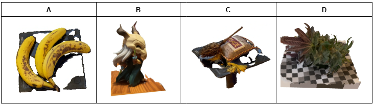
Fig. 8 — 3D reconstruction of chosen objects utilizing photogrammetry (structure from motion), powered by EpicGames "RealityCapture". A: Bananas B: Silent C: Peace D: Flower. A & B reconstructed well. C & D contain number of surface & geometrical inaccuracies
Overall it was satisfying to see these models produced using a different method. However, we prefer the NeRF reconstructions as they seemed more consistent and the process for producing them as well as the program utilized gave us much more control over the entire reconstruction process from beginning to end result.
VI. Gaussian Splat Reconstructions
A. Background
Gaussian Splatting is a technique used to render a 3D scene from 2D images. Using groups of 3D gaussian ellipsoids to represent a 3D space, providing a computationally efficient method for reconstruction. The setup for this method involve a multitude of 2D images run through a colmap to generate the location, orientation, and a sparse/dense 3D point cloud of the scene. This 3D point cloud scene is used as the initialization for a collection of 3D Gaussian ellipsoids. Each gaussian is defined by its position, orientation, anisotropy (shape along different axes), color, and density. Optimizing further refines the gaussian's parameter is used to ensure an accurate, "optimization of the properties of the 3D Gaussians… interleaved with adaptive density control steps, where we add and occasionally remove 3D Gaussians during optimization. The optimization procedure produces a reasonably compact, unstructured, and precise representation of the scene" [3]. Through optimization, gaussian splatting allows for real time rendering with superior visual quality.
B. Results
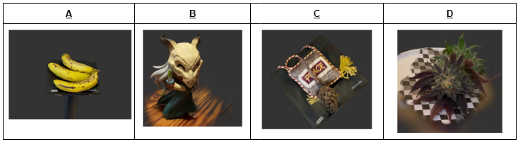
Fig. 9 — 3D reconstruction of chosen objects utilizing gaussian splatting, powered by Jawset's "PostShot". A: Bananas B: Silent C: Peace D: Flower
We were very impressed with the results from gaussian splatting; for some of us, this was our favorite reconstruction method. Gaussian splat results tended to be a "smoother" version of the NeRF reconstructions, and this makes sense from what we know about how gaussian splatting works. The results from this method were perhaps some of the more photorealistic/accurate representations, at least from certain distances.
VII. Discussion
A. Comparison Between Methods
NeRF, photogrammetry, and gaussian splatting are all widely used methods for 3D reconstruction but each have their own unique features. As said before, NeRF creates feature vectors and matches it with the other features in every other image, thus creating a splash of several colors that orient themselves to create the object given the perspective. NeRF also allows for vague estimates of how the given object would look at certain perspectives not captured by the images. While NeRF's capabilities to estimate are what makes it one of the stronger reconstruction capabilities, its downsides come into play with its intensive computations. For large-scale models with a lot of images, it can take hours or even days to process. Photogrammetry, however, looks at the surfaces of objects and matches the features from sparse point clouds. Something that isn't shown in this paper is how the sky is never modelled in photogrammetry, but in Figure 1, you can see how NeRF is trying to match those colors together. This basically takes away some of the sizing issues when it comes to reconstructing larger objects and takes longer to process. If photogrammetry was used, it would've gone faster since it would have considered shorter feature vectors. As for gaussian splatting, this method is almost like if one were to put the good things from NeRFs and photogrammetry all together. Gaussian splatting has the capabilities to do accurate estimates given the areas that each cloudcovers, and has enough knowledge to create smooth and realistic textures given its ability to detect surfaces in its splats. Unfortunately, if using sparse point cloud data, then the splats may leave gaps and awkward textures in its model [6].
B. Initial Plan
Earlier in the paper we mentioned we would discuss potential ways to achieve our initial plan of reconstructing the entirety of the ECE building, exterior & interior. Given enough time, this research project could have been more detailed in the reconstruction of the Electrical Engineering Building. What was missing was the ability to use a drone to properly take videos of the perimeter of the roof of the building to fully encapsulate it. Additionally, with a drone, the stability and pathing of recording would have been far more accurate and thus given better generations since walking around the building had a multitude of obstacles. Additionally, to model the inside of the building would have required the merging of several reconstructions which weren't in the prospects of the given time. This would have required further computations as another NeRF would need to be trained in order to average out the confidence scores of the edges/colors.
VIII. Conclusions
This paper examines various 3D reconstruction AI models, including NeRF, photogrammetry, and gaussian splatting, by applying them to both complex and simple objects. Through these reconstructions, we compared their strengths, limitations, and the abnormalities in each method introduced. We also explored the importance of data collection techniques and their impact on the quality of the reconstructions. One of the primary challenges encountered was ensuring high-quality video data, as blurry frames were taken and thus resulted in unrecognizable reconstructions. However, it was intriguing to observe how these models could still achieve relatively accurate results even with suboptimal input. This highlights the robustness and adaptability of these reconstruction methods, while also acknowledging the importance of precise data acquisition for achieving optimal outcomes.
References
NVlabs, "GitHub - NVlabs/instant-ngp: Instant neural graphics primitives: lightning fast NeRF and more," GitHub. [Online]. Available: https://github.com/NVlabs/instant-ngp
B. Mildenhall, P. P. Srinivasan, M. Tancik, J. T. Barron, R. Ramamoorthi, and R. Ng, "NeRF: Representing Scenes as Neural Radiance Fields for View Synthesis," arXiv.org. [Online]. Available: https://arxiv.org/abs/2003.08934
B. Kerbl, G. Kopanas, T. Leimkühler, and G. Drettakis, "3D Gaussian Splatting for Real-Time Radiance Field Rendering," arXiv.org. [Online]. Available: https://arxiv.org/abs/2308.04079
W. Zhang, Z. Li, Y. Guo and F. Wang, "Combine Neural Radiance Fields in Different Reference Coordinates," 2023 China Automation Congress (CAC), Chongqing, China, 2023, pp. 9067-9072, doi: 10.1109/CAC59555.2023.10450329.
Capstone project for Rutgers University, Dept. of Electrical & Computer Engineering.
Edge Computing · Completed
3d Reconstruction of small objects using NeRFS, Gaussian Splatting & Photogrammetry
This project card is constructed to be a replica of our paper. If you don't want to read, click the skip paper button to jump below to the good stuff c:
Status
Completed · Defended 2025
Compute
Raspberry Pi 5 · 8GB
Localization
RTK-GPS · 2cm
Team
4 engineers · 2 semesters
Fig. 01 — Field test, back lawn, August 2025
Ian Christensen, John Lim, Erik Pacio, Kristin Dana, and Sasan Haghani — Department of Electrical and Computer Engineering, Rutgers University, Piscataway, NJ, 08854, USA
Abstract
Abstract — This paper presents the design and development of GreenKeeper, a budget-friendly autonomous lawn-mower, aimed at providing high-end performance within a budget-friendly price range of $500 to $1000. Existing budget autonomous lawn-mowers typically rely on physical wire boundaries, which significantly increase the overall cost and setup complexity. GreenKeeper eliminates the need for such boundaries while ensuring reliable navigation and obstacle avoidance. Key features include a GPS-based boundary system, powered by an RTK-GPS module offering centimeter-level accuracy, and a computer vision system for dynamic obstacle detection using YOLOv8n and MiDaS. GreenKeeper's movement is managed through a simple pathing algorithm integrated with an inertial measurement unit (IMU), while power is supplied by a 25V lithium iron phosphate (LiFePO4) battery. The design balances cost, functionality, and performance, demonstrating the potential for high-quality autonomous lawn care within an affordable price range.
Index Terms — Autonomous Navigation, Computer Vision, Control Systems, GPS, Sensors, User Interface.
I. Introduction
A recent survey shows that 94% of Americans care deeply about the appearance of their lawn [1]. With world temperatures on the rise each year, it has become increasingly more dangerous for individuals to be able to tackle lawn-care safely [2]. Moreover, elderly individuals and those with disabilities are often unable to work, or are far more restricted in the work they can do in lawn maintenance. As a result, these groups are often locked out of being able to address their lawn in a safe, easy, and affordable manner.
Within the autonomous lawn-mower industry, there exists a budget-friendly range, where prices range between $500 and $1000. Devices such as the WORX Landroid S 1/8 Acre [3] and the YARDCARE E400 [4], can be found within this price range. The Landroid S 1/8 Acre utilizes an above ground boundary wire set up manually by the user, installed with stakes placed into the ground. Autonomous lawn-mowers in this price range require the user to set up a physical wire boundary above ground, or pay extra for an underground wire installation to keep the device within a certain perimeter. Underground boundary wires are typically not removed or further utilized upon transferring of residence, leading to waste. Above ground wires require manual set up, which some users may be unable to accomplish by themselves. These existing budget options meet their design goals, but the additional cost, setup complexity, and waste of a boundary wire, either below or above ground, leaves much to be desired.
After the budget-friendly range is the high-end price bracket, where prices range between $1000 to around $5000, but some are as much as $19,350, like the L400i Deluxe Ambrogio [5]. In this range, autonomous lawn-mowers begin to perform with very satisfactory results while typically not requiring the installation of a physical boundary wire. Models like the Navimow i105 [6] ($999.99) and the Dreame A1 [7] ($1699.99) can be purchased in the lower bracket of this price range. The Navimow i105 utilizes AI-assisted lawn mapping as well as obstacle detection, and the Dreame A1 utilizes similar technologies for a 3D omnidirectional obstacle avoidance system along with a wireless boundary setup. Autonomous lawn-mowers in this price range typically use a combination of cameras and sensors like LIDAR to navigate their way around a lawn while avoiding obstacles. LIDAR is great, however it is also exceedingly expensive. Some of the higher end models like the Husqvarna Automower 430XH [8] ($1749.99) still use a physical boundary wire that most cheaper models rely on. The existing options in this price range are no longer an easy or budget option for the average American household, and some even still rely on wasteful outdated technology.
This paper presents GreenKeeper, a prototype for an autonomous lawn-mower capable of maximizing the features seen in higher end models, while removing the need for a physical boundary wire via the use of RTK-GPS technology and drastically cutting costs to $430-$450 a unit.
The rest of this paper is organized as follows. The design, including the mechanical and electrical components of GreenKeeper are presented in Section II. Section III presents the software solutions utilized in GreenKeeper. The experimental results are presented in Section IV. Current limitations and future work are presented in Section V, and finally the conclusions are provided in Section VI.
II. Hardware Implementation
This section presents the hardware implementation of GreenKeeper. A block diagram of the components of GreenKeeper is presented in Fig. 1.
A. Mechanical Components
1) Chassis/Body: The chassis is the physical body to which all other components and sensors are fixed to [9]. It was formed from plywood sheets via laser cutting. This simple design allowed to more quickly test and prototype the boundary, pathing, and obstacle avoidance systems.
2) Blade Mechanism & Wheels: The blade mechanism is 3D-printed in PLA filament. Grooves in the outer perimeter allow for the blades to be screwed securely into place. The blade mechanism connects underneath the chassis to the large brushless DC (BLDC) motor. The rear driving wheels are printed in the same filament as the blade mechanism and are spiked to aid in the handling of rough terrain and steep slopes.
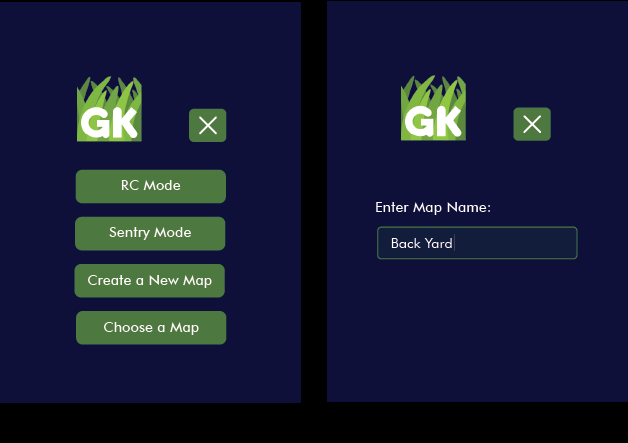
Fig. 1 — A block diagram of hardware components. The GPS, IMU, and Motors are the primary sensors and control mechanisms. Not pictured in this figure is the active cooling module, which sits directly on top of the Pi 5's CPU.
B. Electrical Components
1) Raspberry Pi 5: A 4GB Raspberry Pi 5 [10] was used as the primary and only processing unit. The Pi 5 contains all the necessary pins to connect all modules and other controllers, such as the two motor drivers, the Pi camera, RTK-GPS module, and IMU. The Raspberry Pi 5 was chosen for its ability to handle lite models of computer vision software.
2) CPU Cooling: The Pi 5 Active Cooling Unit [11] was utilized to keep the Pi from overheating, especially during vision model inference. It is a simple heatsink with fan that sits on top of the Pi 5's CPU, and connects directly to a dedicated pin connector on the Pi 5 motherboard.
3) Camera: The PiCamera Module v2 [12] is mounted on a plywood sheet at the front of the chassis. Camera feed is utilized in video format for both vision models, as well as in remote-control (RC) mode for the users viewing.
4) RTK-GPS (and Antenna): A 40-Pin RTK-GPS module connecting directly to the Pi 5 was utilized along with an Antenna to receive dual band signals from both L1 and L5 satellites. This is deployed in both the mapping and pathing functionalities.
5) DC Motors: Three 12-volt DC motors are used in the design; two brushed DC motors are used to propel and steer GreenKeeper from the rear, and one BLDC motor is mounted in the center, with the axle poking down under the chassis to connect the blade mechanism.
6) Motor Drivers: Two H-Bridge motor drivers [13] [14] were utilized to control and supply current to the 3 motors.
7) 26.5v DC Battery: A 26.5v DC Lithium Iron Phosphate (LiFePO4) battery [15] is utilized to power the entire device, including the Pi 5, components, and motors.
8) Power Converters: A 24v-5v/5A DC/DC converter was utilized to meet the Pi 5's rather unconventional power requirements (5v/5A). To limit voltage and provide current to the 12v motors, two variable buck/boost converters were utilized to connect the battery to each of the motor drivers respectively.
9) Inertial Measurement Unit: The inertial measurement unit (IMU) utilized was the MPU6050 [16]. This module was used to track yaw to be able to make accurate and precise turns while pathing.
III. Software Implementation
A. User Interface
To enable user control, the PyGame library was utilized to display a graphical user interface (GUI) alongside a simple state machine to control GreenKeeper for each menu item. Currently available states include: main menu, RC mode, sentry mode, mapping mode, and pathing mode.
RC mode allows the user to control GreenKeeper's movement and actuate the blade mechanism with keyboard controls while viewing the camera feed (without vision models), allowing for a low latency remote control experience with lawn-mowing capabilities. Sentry mode allows the user to view the camera feed along with detected objects from the vision models while GreenKeeper remains stationary. Mapping mode prompts the user for a map name, then activates the RTK-GPS module and begins creating a GPS point map as the user guides GreenKeeper around a desired lawn perimeter. Lastly, pathing mode allows the user to select a previously generated GPS map, then activates the pathing algorithm enabling GreenKeeper to automatically plan and traverse a route covering the map.
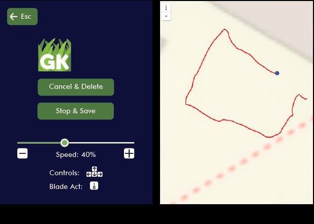
Fig. 2 — Examples from the app used to control and execute commands on GreenKeeper. (a) A view of the main menu. (b) User prompt to enter map name after selecting "create a new map".
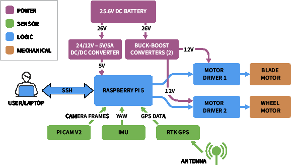
Fig. 3 — Examples of the mapping mode within the app. (a) Mapping mode state screen with RC controls. (b) A corresponding live GPS map output.
B. Lawn Mapping
To create effective lawn maps, an RTK-enabled GPS module was used. This module provides an accuracy of 1-5cm on average. To map out a lawn, the user is first prompted to enter a name for the lawn, as seen in Fig. 2(a), which creates an empty text file for writing GPS coordinates in the Pi 5's directory. Then the user will control GreenKeeper and guide it around the perimeter of the lawn they would like to set a boundary for. GPS points are saved to the text file as the user traverses the perimeter. These points are later converted into a polygon and utilized in the pathing algorithm as the boundary for GreenKeeper.
C. Obstacle Detection
To perform object detection, two pre-trained vision models are utilized along with the camera feed from the PiCam Module v2. The first model is YOLOv8n [17] which has been converted to ncnn format, the fastest and smallest version of YOLOv8 object detection for ARM architecture edge devices, like the Pi 5. YOLOv8n detects objects and annotates the frame with bounding boxes and confidence ratings. The resulting image is passed through a second model called MiDaS [18] [19] from Intel Labs, which estimates the distance of the object with respect to the camera.
To increase efficiency and save power, these obstacle detection processes are currently only called during the sentry mode operation. It is also important to note that unlike many typical vision tasks, the most important metric for GreenKeeper is the recall (the model's ability to detect an object exists in the first place) rather than the accuracy or classification.
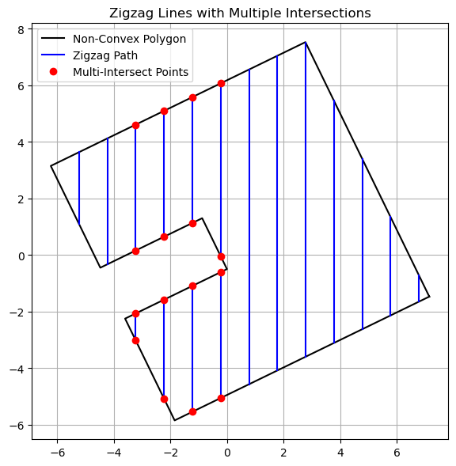
Fig. 4 — Comparison of lawn shape before and after PCA alignment. The left plot (blue) shows the slanted rectangular plotted using latitude and longitude coordinates. The same shape is transformed using PCA which approximately aligns the major axis of the shape with the horizontal axis (Principal Component 1).
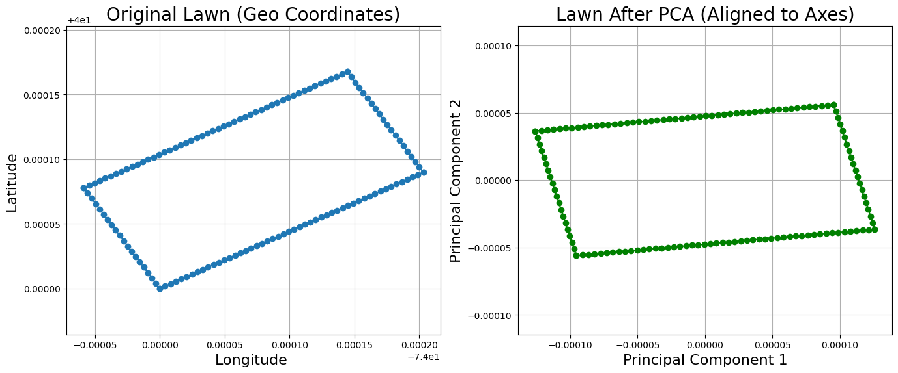
Fig. 5 — Complete lawn map with predetermined zig zag path that GreenKeeper will follow. Note that the map shown in Fig 5 is different from the maps displayed in Fig 4.
D. Pathing Algorithm
To tackle automated pathing, a multi-threaded pathing program was developed that enables GreenKeeper to autonomously traverse a lawn using its GPS, IMU, and motor drivers. This program runs independently of other modules like computer vision or the main menu, and is composed of three main components: map loading, path generation, and real-time path following with visualization.
The program is structured as a class that initializes the motor and IMU drivers. The IMU relies on its gyroscope sensor to find its yaw value ranging from 0° to 360°. When initializing the IMU, an initial calibration is performed by grabbing the first 100 samples of the gyroscope, and find the average yaw rate. That value is then subtracted from any new samples to reduce the amount of drift the robot experiences. After initializing the drivers, the program loads a saved GPS point map, and generates a zigzag path using the Shapely library [20] to define the lawn boundary as a polygon. The IMU is used for precise rotation between path points.
Once inside the lawn boundary, GreenKeeper applies Principal Component Analysis (PCA) [21] to align the polygon with the primary axes, simplifying path generation. Zigzag lines are spaced 0.5 meters apart, which is narrower than GreenKeeper's width of 1.5ft. Starting from the bottom-left, vertical lines are generated by connecting (x, miny) to (x, maxy) within bounds. Lines alternate direction until the rightmost edge is reached. Finally, the zigzag path is transformed back to the original GPS coordinate system using PCA's inverse transform and stored for execution, as seen in Fig 5.
IV. Results
A. Final Prototype
The final prototype of GreenKeeper is presented in Fig. 6. The spiked 3-D printed rear wheels along with the weight of the battery give good traction on a variety of terrains and slopes. Unlocked castor wheels at the front allow for smooth low friction turns.
Not pictured in Fig. 6 is the blade mechanism, which attaches onto the large central BLDC Motor. The 3D CAD diagram for the blade mechanism is shown in Fig. 7. It was printed in the same color & material as the rear driving wheels.
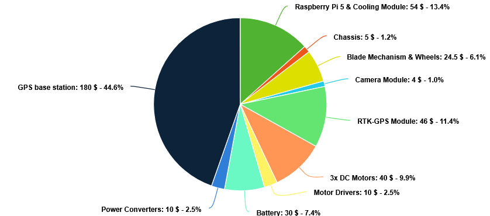
Fig. 6 — Final prototype of GreenKeeper.
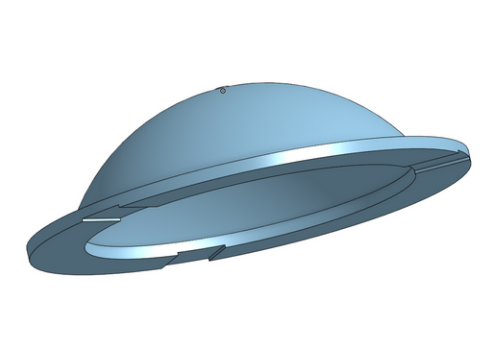
Fig. 7 — The blade mechanism which attaches underneath the chassis to the central DC motor. Note the 3 grooves in the lower outer perimeter, this is where the blades are screwed into place. This mechanism attaches to the central BLDC Motor, which rotates between 1000 and 3000 RPM
B. Inertial Measurement Unit (MPU6050)
GreenKeeper uses the MPU-6050 gyroscope to estimate orientation by measuring angular velocity and integrating it over time to compute yaw. This process introduces minor drift due to integration error, even when stationary. During testing, the IMU was calibrated to 0° at startup and manually rotated to test accuracy at various orientations. Each angle/orientation was tested by averaging 10 readings. Although manual rotation introduced slight user error, accuracy remained above 98% as seen in Table 1, which is sufficient. Since GreenKeeper primarily moves in straight lines, small orientation errors do not significantly affect performance.
Table I — IMU Accuracy Evaluation
Expected Angle (°)
Measured Average (°)
Absolute Error (°)
Accuracy (%)
0
0.30
0.30
99.83
90
89.42
0.58
99.68
180
176.68
3.32
98.15
C. Cost of Production
The total cost of the prototype was $430, where the cost breakdown for the prototype is shown in Fig. 8. Fig. 9 presents the cost breakdown of producing 1000+ units of Greenkeeper including the addition of a GPS base station [22] as discussed in the next section.
The bulk ordering of the hardware components as well as using an injection molded chassis rather than a laser-cut plywood one would lower production costs. Considering these factors, it would be feasible to develop a functionally identical product to this $430 prototype, for about $444, while increasing the reliability of the pathing function, and resistance to hard weather conditions. Notice that the cost would be much less than the available boundary wire free models available, such as the Husqvarna Automower 430XH ($1749.99) [8], or the Dreame A1 ($1699.99) [7]. Also note that this cost is expected to increase due to marketing, storage, transportation, and development of the device. Table II provides a comparison of GreenKeeper with other autonomous lawn-mowers in terms of available features and price.
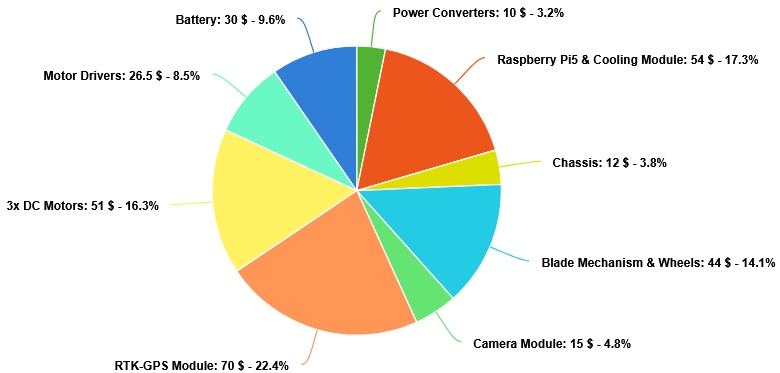
Fig. 8 — Cost breakdown of the initial prototype
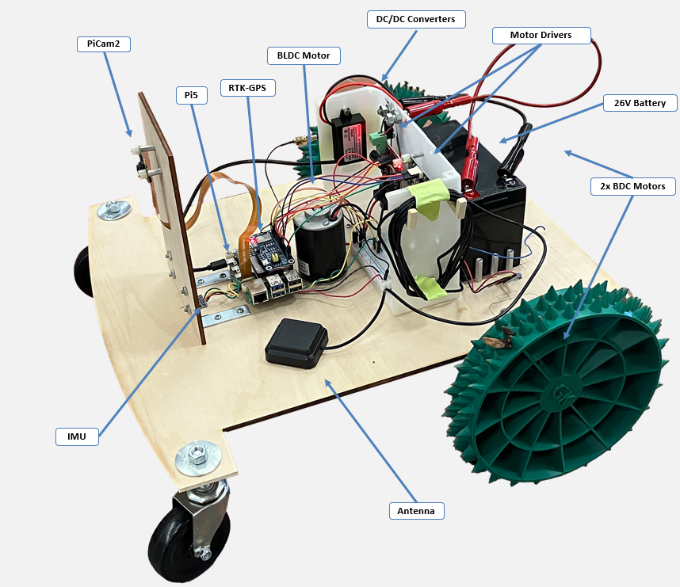
Fig. 9 — Cost breakdown of mass producing 1000+ units utilizing an injection molded chassis and including the addition of a GPS base station.
Table II — Comparison of Robotic Lawn Mower Specifications
Feature
WR165 Landroid S
Navimow i105N
Dreame Roboticmower A1
Automower 430XH
GreenKeeper
Price
$699
$999.00
$1,599.99
$1,749.99
$500
Area Capacity
0.5 Acre (~2000 m²)
0.125 Acre
0.5 Acre (~2000 m²)
0.8 Acre (~3200 m²)
0.25 Acre (1000 m²)
Cutting Width
180 mm
180 mm
218 mm
240 mm
200 mm
Cutting Height
30–60 mm
51–91 mm
30–70 mm
50–90 mm
60 mm
Maximum Slope
30% / 17°
29% / 16°
45% / 24°
15% (boundary) – 45% / 8.5° – 24°
N/A
Noise Level
59 dB
58 dB
N/A
58 dB
N/A
Boundary Type
Physical Wire
Wireless
Wireless
Physical Wire
Wireless
Battery Capacity (mAh)
6000
2550
5000
5000
6000
Charging Type
Charging Dock
Charging Dock
Charging Dock
Charging Dock
Plug-in
Sensors
- Ultrasonic - Boundary Sensor - Rain - IMU
- RTK-GPS - Camera(s) - Odometer - IMU
- Lidar - Rain - IMU
- GPS
- Camera - RTK-GPS - IMU
V. Design Limitations & Future Work
There are several areas where the design of GreenKeeper could be improved. Currently, the latency introduced by the GPS communication creates a risk of pathing malfunction. With the addition of an on-site GPS base station [22], the pathing program could become far more accurate and responsive. As discussed in the cost analysis, an injection molded chassis would provide further weather resistance, as well as greatly lower overall costs, which would make up for the addition of a GPS base station.
Further research on the system should also include analyzing design changes to the power delivery system which can greatly improve the efficiency and cost of the system. A specially developed power conversion custom PCB integrated for all components would further drive down costs, and substantially increase the efficiency of the device.
The auto-pathing state should also be expanded with the obstacle detection system. Algorithms such as potential field avoidance [23] or A* pathing [24] could be utilized to find a new path around detected objects. This could be further extended by using a Spiral Spanning Tree coverage path planner [25] [26] that allows GreenKeeper to have any starting point within the perimeter.
Sentry mode will relay any detected objects along with their estimated distance back to the users device over SSH, but currently does not prompt any further actions to be taken by GreenKeeper. This could be complimented with an optional notification system.
There are also a number of avenues to improve the user experience and GUI. The current GUI, while completely functional as a prototype, could be updated to be more visually appealing and user-friendly. Utilizing technology like Bluetooth Low-Energy (BLE) alongside a multi-platform mobile phone app would allow some of the workload to be taken off the Pi 5. It would also allow for a cleaner user interface and connection experience, as well as a more reliable mapping feature that would not require a WiFi connection.
VI. Conclusions
This paper presented GreenKeeper, an accessible and affordable prototype of an autonomous lawn-mower capable of competing with higher end models while remaining within the budget-friendly range. GreenKeeper achieves this by utilizing RTK-GPS mapping to replace the typical need for a physical boundary wire and provide a feedback source for the mower's pathing to follow. The integration of computer vision models like YOLOv8n and MiDaS show strong promise for real time object detection & distance estimation on affordable edge devices such as the Pi 5. Compared to existing products that rely on expensive sensors like LIDAR, GreenKeeper is able to provide similar functionalities for a fraction of the price.
C. Faurie, B. M. Varghese, J. Liu, and P. Bi, "Association Between High Temperature and Heatwaves with Heat-related Illnesses: A Systematic Review and Meta-analysis," Science of The Total Environment, vol. 852, p. 158332, 2022.
N. Ramchandran, N. N. Kumar, S. Rajeshwaran, R. Jeyaseelan, and S. S. Harrish, "Design And Fabrication Of Semi-Automated Lawn Mower," International Journal of Innovative Technology and Exploring Engineering, vol. 8, no. 10, p. 943–946, Aug. 2019.
R. Ranftl, K. Lasinger, D. Hafner, K. Schindler, and V. Koltun, "Towards Robust Monocular Depth Estimation: Mixing Datasets for Zero-Shot Cross-Dataset Transfer," IEEE Transactions on Pattern Analysis and Machine Intelligence, vol. 44, no. 3, 2022.
R. Birkl, D. Wofk, and M. Müller, "MiDaS v3.1 – A Model Zoo for Robust Monocular Relative Depth Estimation," arXiv preprint arXiv:2307.14460, 2023.
J. Rosell, R. Suárez, and A. Pérez, "Path Planning for Grasping Operations Using an adaptive PCA-based Sampling Method," Autonomous Robots, vol. 35, no. 1, p. 27–36, Apr 2013.
C. Liu, L. Zhai, and X. Zhang, "Research on Local Real-time Obstacle Avoidance Path Planning of Unmanned Vehicle Based on Improved Artificial Potential Field Method," in 2022 6th CAA International Conference on Vehicular Control and Intelligence (CVCI), 2022, pp. 1–6.
Y. Yang and Q. Cai, "Research on the A-star Algorithm Based on Path Finding," in 2023 IEEE 3rd International Conference on Data Science and Computer Application (ICDSCA), 2023, pp. 199–202.
D. Engelsons, M. Tiger, and F. Heintz, "Coverage path planning in large-scale multi-floor urban environments with applications to autonomous road sweeping," in 2022 International Conference on Robotics and Automation (ICRA), 2022, pp. 3328–3334.
S. J. Chang and B. J. Dan, "Free Movimg Pattern's Online Spanning Tree Coverage Algorithm," in 2006 SICE-ICASE International Joint Conference, 2006, pp. 2935–2938.
Demo day run · YouTube embed to come
Notes & links
Full report and defense slides are available on request. The most painful lesson from this project, repeated here so I don't forget: never trust a GPS fix that hasn't been stationary for 30 seconds. Second most painful: always bring a spare battery to demo day.
The codebase is a ROS2 Humble stack; happy to share the repo privately. It's not clean, but it ran.
Post-defense, the team is talking about a v2 with a swappable cutting head and a web dashboard — no firm plans but the group chat is still active.
Plants · Ongoing
Plant Collection
I own a lot of plants. I'll try my best to document all of them here.
Plants · Ongoing
Plant Collection
A distributed mesh of ESP32 nodes, one per plant pot. Each reads capacitive soil moisture and ambient light, reporting every 30 seconds over ESP-NOW to a gateway node.
Status
Ongoing
Start Date
December 2022
Discipline
Botany
Completion Date
--
Fig. 01 — Living room deployment, seven nodes online
Node hardware
ESP32-C3 SuperMini per pot. Capacitive soil probe (the corrosion-resistant kind, not the bare-electrode ones that die in a month), BH1750 for light, and a tiny LiPo with a solar trickle for the pots that get enough sun.
Deep-sleep between samples puts draw at about 80 µA average. A 400 mAh cell lasts roughly two months between charges on the non-solar nodes.
Fig. 02 — Grafana dashboard, 30-day view
Image · insert later
Fig. 03 — Gateway node breakdown
Gateway & dashboard
Gateway forwards to an MQTT broker running on a Raspberry Pi. InfluxDB stores the time series; Grafana draws the dashboard. Alerts fire to my phone when any plant drops below its per-species moisture threshold.
Thresholds are different for every pot — a pothos lives fine at 25% capacity, a Calathea throws a tantrum below 55%. Those thresholds live in a small YAML I edit by hand when I add a plant.
Dashboard walkthrough · YouTube embed to come
Notes & links
Seven plants on the network since spring. Zero casualties since deploying — which, given the track record before this project, is genuinely the best feature.
Next up: closed-loop drip via a small peristaltic pump per pot. I have the pumps on the bench; what I need is a good way to refill the reservoir without the whole setup becoming a second job.
If you want the firmware or the gateway docker-compose, ping me — it's not on GitHub yet but it's close to being shareable.
C₂ · 10µF — Shop
The shop.
Beats, sample packs, and hardware drops. Everything here was built or produced by hand.
Beat · R&B
haze to come
$24.99
Beat · R&B
the voice of beauty
$24.99
Beat · Acoustic
firepit
$19.99
Samples
Vintage Brass Pack
$14.99
Presets
Lo-fi Reverb Suite
$9.99
Hardware · Kit
MIDI Controller PCB
$49.00
Beat · Electronic
late frequency
$24.99
Print · Zine
Signal Path
$12.00
R_f · 47kΩ Resistor — Contact
Plug in.
Always open to collaboration, internship conversations, or talking keyboards and circuits. Find me wherever the signal reaches.